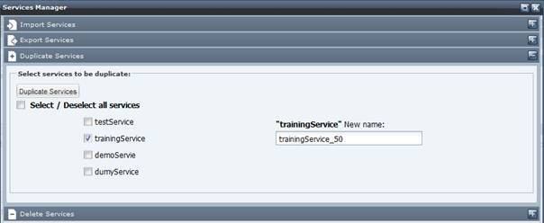
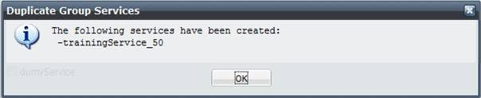

To duplicate a service follows these steps.
Select the “Service Management” link on the top bar menu then select the “Service Manager” section

In the service Manager pop up select the Duplicate Services slider tab and select the service(s) you want to duplicate. The application will suggest a new name for each selected service. You can accept the suggested name(s) or enter a new name.

Select the Duplicate Servces button. A pop up window listing the new created services should be displayed.

Click on the ok button. The new services should be listed in the Duplicate Service slider tab.